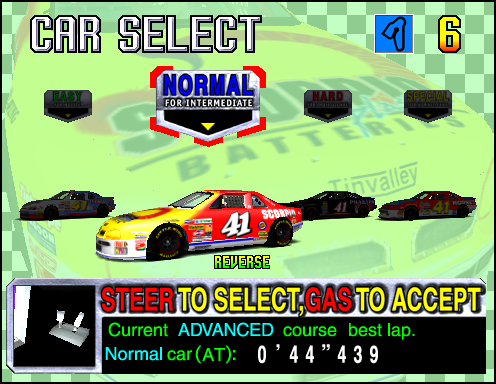
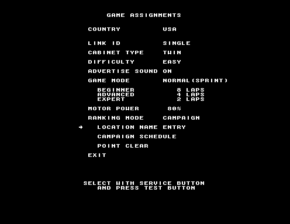

Hold Start when selecting a course. You'll instead select a Mirrored version of it. There's not really much of a way to tell you've done this right until the stage loads.

POWER EDITION ONLY!
Hold Brake when selecting a course.
'Reverse' will show up at the bottom of the screen to let you know you've done it.
There is a way to drive the course backwards in Battle on the Edge though...
turn around when the race starts! Your pit crew will beg you to turn around, but eventually the big 'Reverse' banner will move to the bottom of the screen, and in
the Japanese version you'll hear someone (that I'm presuming is Takenobu Mitsuyoshi) yell something, signifying you're now running the race in reverse. Obviously, there's one very big difference between this and Power Edition's more 'legitimate' implementation though -
you're driving into oncoming traffic!
That said, if you're able to do this and actually finish the race, you're treated to a unique sight; the ending credits for the stage, despite the fact you technically finished last!
Hold Start when selecting a transmission to enable Time Attack mode.OK, this one isn't really hidden; the game literally tells you about it. But we might as well be thorough...
Hold Start during the "Gentlemen, Start Your Engines" screen.This toggles the vocalist opposite to the game's current default settings. The US region default is Dennis St James, while the JP default is Takenobu Mitsuyoshi.
This code's notable as with the US board region, it's actually the
only way to hear Mitsuyoshi's vocals - you can't change the vocalist setting in the Test Menu outside of Japan!
Apparently this was also supposed to change the announcer clip used when selecting the Challenge/Mix course in Power Edition too - in the Japanese version, you'll always hear Mitsuyoshi shout 'MIX!' when selecting it, and in the US version you'll always
hear Dennis St James say "Challenge";
but opposite voice clips exist for both versions!
POWER EDITION ONLY!
Hold one of the VR Buttons during the "Gentlemen, Start Your Engines" screen.
If you just can't get enough of the Beginner Course song (like me), why not just listen to it on every course? Each VR Button corresponds to a different song. The order's pretty obvious, but it's as follows:
VR1 - Slingshot ::
VR2 - I Can Do It ::
VR3 - Skyscraper Sequence ::
VR4 - Ending Medley
That last one's a bit odd - it literally just plays through the different 'Victory Lane' themes, and then once the last one ends, it's... just over. Could've popped an unused track in here, SEGA...
BATTLE ON THE EDGE ONLY!
Before starting the game, put the stick into Gear 1. At the Course Select, move into Gear 4. Before selecting a course, input the following VR Buttons: 1, 4, 2, 4, 1, 2, 2+3 (together), 1. You'll now have access to one of the best-kept secrets in all of gaming - the Hornet Special!
The Hornet Special has one major difference over every other car - you can customise its stats on the Car Select screen! Using the VR buttons and steering wheel, you can change the Engine, Steering and Suspension to better suit your playstyle, or just make an absolute monster of a car. For years it was assumed that this
car was an unfinished leftover of some kind, because people could only figure out how to access it via hacking - which bypassed the customisation aspect, and basically broke its stats, making it nigh impossible to actually use. It's speculated that the only people who actually
knew about the code to unlock the Hornet Special were superplay group Team Marubaku (MBK), who referred to it in their SuperPlay videos for the game but didn't share the code. In the end, over
20 years later, It was
The Cutting Room Floor who finally datamined the solution. Even the official Daytona 2 guidebooks don't mention this car!
RACE SECRETS
Next up - fun stuff you can try mid-race!
Hold VR4, then press the other 3 VR buttons for a birds-eye view. Press VR1+VR2 for a left wheel-cam, and VR2+VR3 for a right wheel-cam. Press VR2 twice for a cockpit cam.
This is actually a carry-over from the original Daytona USA. It's fairly impractical, but still kinda neat!
Alright, this is where stuff gets
weird. Every track in Daytona USA 2 has a secret that can be accessed by pressing Start at some point in the course. Let's go through them.
Beginner Course - Start Line Messages
Press Start at the Start/Finish Line of the Beginner Course.
The LED sign will cycle through various messages as you tap the Start Button. Some are fairly standard, such as 'ERROR' and 'SEGA'. Others sound like taglines, ('REAL HOT RACER!') and some are just straight up rude, as you can see above.
Advanced Course - Laser Beams
Press Start during the Space Haneda sequence on Lap 3 or later.
You see all those spaceships flying around in the sky? Well now you can control them! Or at least, their weaponry; tapping Start makes them fire their lasers. Which doesn't really do much besides covering the track with explosions.
Expert Course - Spinning Fans
Hold Start during the harbor area of the course.
Holding Start during this part of the track will cause the fans here to spin. That's pretty fun. Peak of excitement, innit.
Anyway, this is the part where I get a bit of an ego, because there's actually a second part to this particular Start Button secret - that would've gone completely undiscovered, where it not for the fact I was really bored one day. For some reason, I pondered
how fast those fans could spin - and I figured the best way to test this out was to hold Start for an entire lap, then come back to the harbor area.
So, I did exactly that, got back to the harbor to watch how fast those fans were spinning, and-
HUH!?
Yes, if you hold the Start Button for an entire lap, the fans will literally
fly off their hinges, shoot off into the sky, and eventually disappear behind a hill in the distance. When I first saw this, I was absolutely dumbfounded that they actually thought to program
something so... specific. But then again, that's 90's SEGA for you. This will always be the bizarre Daytona USA 2 thing
I discovered, so it'll always be sort of special to me, as ridiculous as that sounds.
Incidentally, if you'd rather see these in action - because these screenshots are all native res and can be somewhat hard to make out -
I uploaded a video of all three of these secrets a while ago.
Hold Start during the race, then press the VR Buttons.
Another holdover from the original Daytona USA. You can use this to change how zoomed in the traffic camera on the HUD is. Maybe you'll find this helpful!
TEST MENU STUFF
Things you can find buried in the game's Operator Test Menu.
Enter the Test Menu. Hold Start and press VR4, VR4, VR2, VR3, VR1, VR3, VR2.
Alternatively, enter the Test Menu and press Service and Test at the same time.
This lets you change the region of your Daytona 2 board. This is actually pretty handy, as there's some differences between the two beyond just the language; although nothing especially substantial.

Under Game Assignments in the Test Menu, change the Ranking Mode to Campaign.
This isn't so much a secret, more a really cool option I never saw anyone talk about. Daytona USA 2 has options for 'Campaign Ranking', that basically allows arcade operators to host tournaments and competitions within the game.
The game will keep track of your points (as long as you use the same name and date of birth each time you play), and arcade operators can even enter their arcade's name in the menu settings, to be displayed ingame! I dig it when games do this.
LIVE MODE
While not as rare a sight nowadays, the game's Live Mode used to be a bit of an enigma. With Model 3 Network emulation being a thing now, it's a lot easier to check out at home.
When one cabinet in a networked set is put into 'Live' mode in the test menu, it becomes a camera feed into the other games being played. This isn't really anything that mind-blowing, but it's cool how in-depth this is; every track has a bunch of named
landmarks to help give them some more identity (with some of these names, such as the Advanced Course's Black Hole Turn, being fairly well-known in the community), and in longer races the commentator will even hold interviews with the pit crew and other drivers
- they recorded a lot of dialogue for this! Certainly, it's cool to experience.
Originally, this page was going to catalogue every single one of these landmarks... maybe another time.